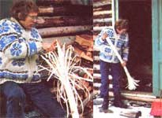

The next time you're fidgeting in front of the fireplace - waitin' for the weather outside to break - why not treat your hands to some productive enjoyment by whittlin' out a birch broom? A penknife, birch sapling and a little patience are all you'll need to revive a vanishing craft, save a few bucks, and create that mansized broom you've always wanted for those tough cleanup jobs (such as sweeping out the stable or clearing the driveway).
First, find a straight birch sapling (about 2 to 3 inches thick and approximately 5 feet long) with as few knots as possible, and remove the bark from the shoot's entire length.
Next use an ordinary penknife to peel back several thin, 12- to 15-inch long strips of wood at one end of the stick. (See accompanying photograph, above.) The finer you make these strips the finer your finished product will be. Continue to whittle back dozens of strips around the pole until only a small center "core" is left - then saw this core off and fasten several bands of fine wire, twine, or cord around its bristles. Finally, whittle the remainder of the handle to fit your hands (or your whims). and sand the surface smooth.
Like rug making, broom whittling was a yearly chore on many a pioneer homestead. According to one old farm journal that I've read, "splint brooms (as these implements were known) can be made of maple, ash or ironwood as well as birch. Perhaps they can be fashioned from other types of wood, too - I don't know. I do know this, though: Thanks to their stout wooden "bristles," these heavy-duty sweepers are ideal for such outdoor chores as brushing out a toolshed or stable, or clearing lawns and paths of leaves, snow, papers, etc.
The only problem with these handcrafted beauties is that after you've put several hours' worth of creative energy into making one, you may never want to lot the finished broom touch a grimy floor! Which is all the more reason to make two brooms: one to got dirty - and another to lot rest amid the family heirlooms, where it can collect dust the slow way.
|
 MOTHER EARTH NEWS STAFF Craft an attractive handmade broom from birch. |
|
|